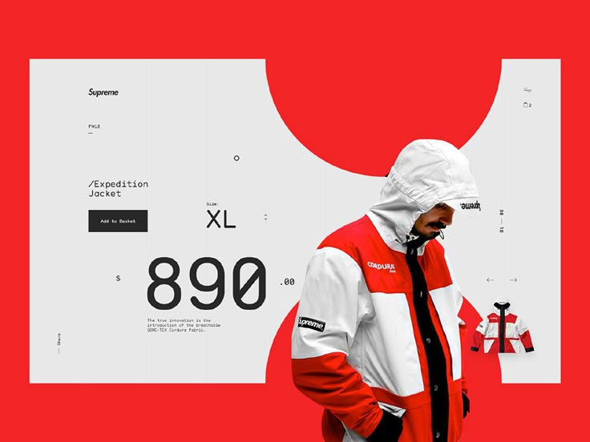

Cinema Booking System
A collaborative full-stack project: browse films, pick seats and book tickets, with authentication and an admin panel behind it.
View on GitHub
A full-stack cinema booking app built with a team, where users browse films, choose their seats and book tickets end to end.
Beyond the booking flow, the system includes user authentication and an admin panel for managing films and screenings. It was a chance to work the way real teams do: shared codebase, version control and features split across several people.
The hardest part was the seat selection: it needed to feel immediate, prevent double-booking, and stay in sync with the backend. On top of that, building as a team meant keeping components consistent and merging everyone's work cleanly through Git.
-
01
Frontend components
Contributed React components for browsing films and the booking flow, keeping the interface consistent across the app.
-
02
Seat selection & booking
Worked on the interactive seat-picking and booking experience, wiring the UI up to the booking data.
-
03
Overall architecture
Helped shape the overall structure of the app and how features fit together across the team.
-
04
Collaboration in Git
Worked in a shared repository with branches, reviews and merges, practising the workflow used on real teams.
A working booking system that covers the full journey from film to confirmed seat, and my first real taste of building a larger app collaboratively rather than solo.
Note to self: tighten the exact split of who built what, and add anything you are proud of here, for example a tricky bug you solved or what you learned about teamwork. Make sure the role claims match what you actually did.